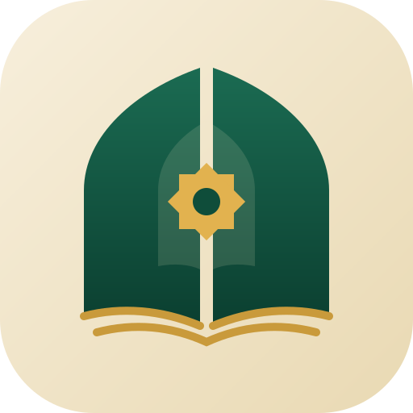

el-MihrâbKur'ân-ı Kerîm ve Tefsîri

Vakitler Diyanet hesabına göredir (imsak 18°, yatsı 17°, temkinli). İnternet yokken konumdan hesaplanır.
Bütün metinler aşağıdaki yayımlanmış kaynaklardan, okuduğunuz anda olduğu gibi alınır. Her tefsir metninin altında müellifi ve kaynak sayfasında aç bağlantısı bulunur; metni aslıyla karşılaştırabilirsiniz.
| Bölüm | Kaynak |
|---|---|
| Kur'ân-ı Kerîm metni | Tanzil projesinin Kur'an metni (Hafs rivâyeti, Osmânî resm ve imlâî yazım) — AlQuran.cloud üzerinden |
| Meâller | Elmalılı Hamdi Yazır, Süleyman Ateş, Suat Yıldırım, Gölpınarlı, Ali Bulaç, Saheeh International — Tanzil / AlQuran.cloud |
| Tefsir, i'râb, belâgat, nüzûl, garîb | Quranpedia (el-Mevsûatü'l-Kur'âniyye) dijital kütüphanesindeki basılı eserlerin metinleri; Kurtubî tefsiri Quran.com'dan |
| Türkçe tefsir ve açıklamalı meâller | el-Muhtasar fi't-Tefsîr Türkçe tercümesi (Merkezü Tefsîr) — Quranpedia; Ravvâd ve Şaban Piriş açıklamalı meâlleri — QuranEnc.com; Elmalılı ve Süleyman Ateş meâlleri — Tanzil |
| Kıraat farkları ve rivâyet sesleri | Quranpedia kıraat veritabanı |
| Tilâvet sesleri | EveryAyah.com ve Islamic Network ses arşivi |
| Tecvid renkleri, Latin okunuş | Quran.com; AlQuran.cloud |
Programın yaptığı tek işlem: Bazı tefsirler kaynakta sayfa sayfa durur. Program, okuduğunuz âyetin şerhinin başladığı yeri bulup oradan gösterir; metnin kendisine dokunmaz. Böyle durumlarda kutunun üstünde sayfanın tamamını göster bağlantısı çıkar.
Hata görürseniz: Metni kaynak sayfasıyla karşılaştırın. Fark varsa bizim tarafımızdadır, lütfen bildirin; yoksa kaynaktaki dijital nüshadan gelmektedir. İlmî çalışmalarda atıf için eserin basılı nüshasına müracaat ediniz.
Sûre adları, arayüz yazıları ve yazılım bu çalışma için hazırlanmıştır.
iPhone / iPad (Safari):
1. Alttaki Paylaş simgesine (yukarı ok olan kare) dokunun.
2. Ana Ekrana Ekle'yi seçin.
3. Ekle'ye dokunun.
Android (Chrome):
Sağ üstteki ⋮ menüsünden Uygulamayı yükle veya Ana ekrana ekle'yi seçin.
Kurulduktan sonra el-Mihrâb ana ekranınızda kendi simgesiyle, tam ekran bir uygulama gibi açılır.